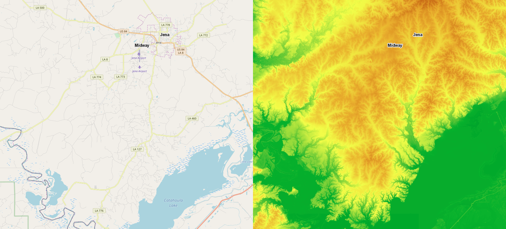
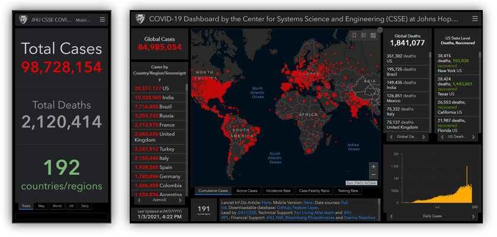
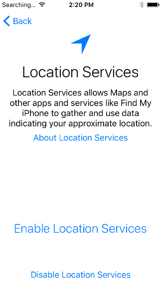
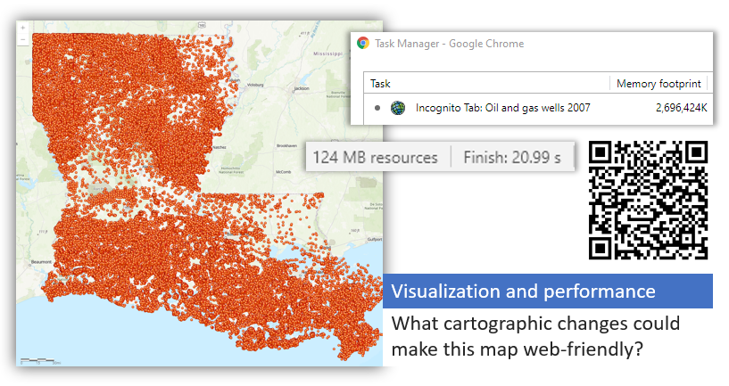
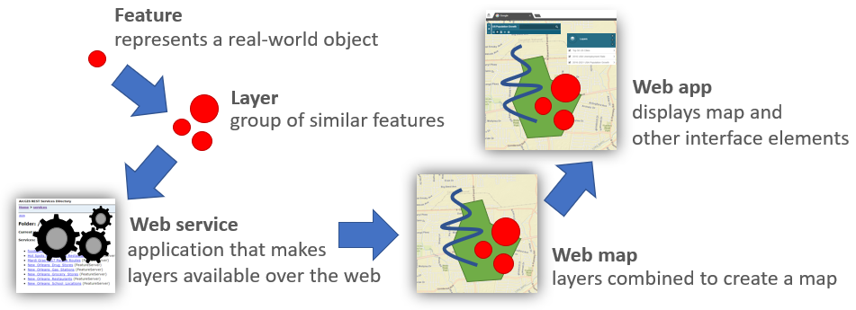
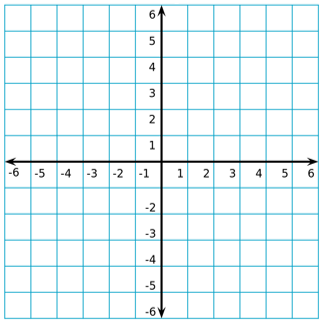
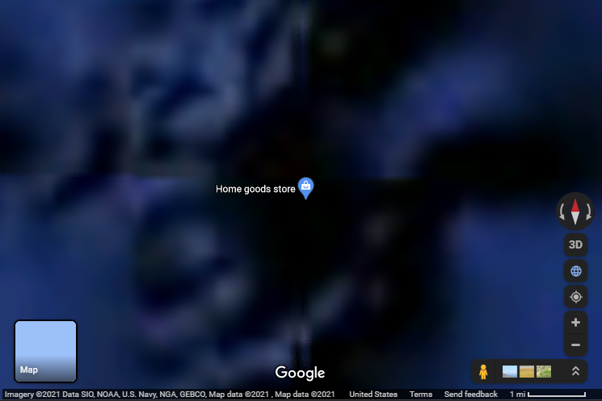
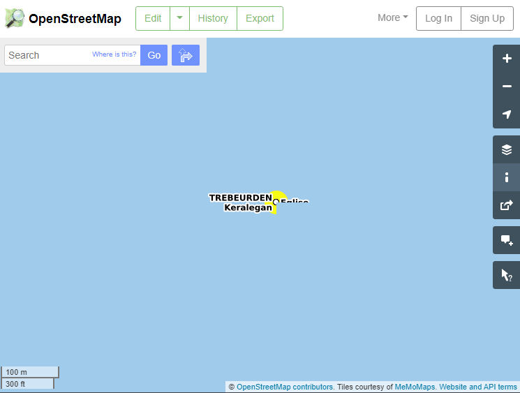

Lesson 6
Making maps in Web GIS
Table of Contents
- Introduction
- Cartography in GIS
- Possibilities and constraints
- Building a Web GIS application
- Coordinate systems and projections
- Summary
Terms: discrete object view, continuous field view, vector, raster, symbology, user interface, projection, Web Mercator
Introduction
Maps communicate information in a visual hierarchy that makes important things more visible or identifiable. What is considered important depends on the purpose of the map. It is the job of the cartographer to determine how to “tell the story of the data”, a task that blends science and art in a balance of objectivity and subjectivity.
This lesson will cover basic concepts in representing reality with maps, and special considerations for creating maps on the web.
Cartography in GIS
Digital maps are a way to model reality. When real-world objects or phenomena are represented on a map, they generally fall into two categories:
- Discrete object view
- Objects on a map with well-defined boundaries or locations
- Examples: rivers, state boundaries, hospitals, roads, animal migration paths
- Typically represented as vector data: points, lines, or polygons
- Continuous field view
- Represents phenomena that cover a surface, with no clear start and end
- Examples: elevation, temperature, precipitation, ground cover
- Typically represented with raster data: images with pixels

Figure 1. Maps of the same location shown as a discrete object view (left), with discernable objects such as water bodies and roads, and a continuous field view (right), where the ground elevation is depicted as a continuous color ramp representing low elevation in green and higher elevations in red.
Either way, cartographers must decide how the map should visually represent the real world. Visual properties such as icons and colors chosen to represent layers on a map are the symbology. The symbology is often driven by the attributes of each feature in a layer. For example, in a global map of population density by country, countries with a higher population density could have a darker shade. In a map of earthquakes, a bullseye symbol could be used at each epicenter, with larger magnitude earthquakes given larger symbols. While data might be considered objective, symbology can introduce subjectivity and bias.
Cartographers in Web GIS can also decide how much users can interact with the map and change its appearance, because unlike conventional maps, web maps are a user interface with controls for toggling layers, changing the scale (zooming), manipulating data, and any other means of interacting with the application.
As the assignments in this course will demonstrate, building a web map is as much about building an interface as it is building the map itself.
Possibilities and constraints
There are certain considerations for creating maps on the web. Some could apply to GIS in general but are especially important for Web GIS, where users might be on a web browser instead of GIS software, a mobile device instead of a PC, and a slow connection instead of broadband Internet. These factors might lead developers to offer separate apps for different devices.

Figure 2. The Johns Hopkins University coronavirus dashboard is offered as mobile and desktop versions.
Possibilities
- Linked to additional content - web maps can link to other content like videos, pictures, and text, giving creators more options for communicating through the map
- Wide distribution - public web maps have the potential to be shared widely and reach a large, diverse audience, with the potential to go viral. The audience won’t only be GIS professionals, so the map must be easy enough to use for a general audience.
- Interactive - aside from the typical zooming, panning, and toggling layers, Web GIS offers the ability for users to change the map in real-time, making for a more interactive experience than conventional maps. Furthermore, if you give users the ability to alter the map and view the data in different ways, you might be able to avoid the problem of biases in your design choices.
- Frequent updates - a web map can be updated after release as frequently as needed, in contrast to releasing a PDF or image and not having control of copies after they are circulated.
- Augmented reality and 3D - maps do not have to be a 2D bird’s-eye view. The view of a phone/tablet camera can act as a real-time basemap, with graphics overlaid similar to layers of points, lines, and polygons.
- Location-aware devices - if users view a web map on a phone or other location-aware device, a Web GIS application could potentially react to the user’s location to zoom the map or trigger events.

Figure 3. Augmented reality and Web GIS in practice for managing utilities and infrastructure in New Jersey. Source: Cartodyne/Esri

Figure 4. A message about enabling location services on a mobile device.
Constraints
- Devices - When creating a map and the apps that display them, web cartographers must keep in mind the variety of devices their content might be viewed on, from large desktop monitors to small mobile screens, stationary PCs to GPS-enabled phones, and mouse/keyboard to touchscreen. Developers can create separate apps for these different scenarios or try to build a versatile app that works with all of these variables.
- Internet access - Web maps are typically only accessible by users with an Internet connection, but certain applications might have to provide some option for temporary offline use
- Bandwidth - Even for always-connected users, their Internet speed might not always be optimal, or data usage might incur costs. Web cartographers should consider how much data their maps transfer to keep them fast and cheap.
- Costs - Hosting for web maps and websites typically involves ongoing costs for IaaS and SaaS services or the costs of buying and maintaining hardware (for larger organizations), though this course will later introduce free options (Github and Leaflet).
- Software - Developers might have to test on different browsers, and if they develop mobile apps they will likely need to consider at least two platforms, Android and iOS.

Figure 5. This map of oil and gas wells contains more than 200,000 features displayed in an ArcGIS Feature Service. It took more than 20 seconds to load, downloaded more than 100 MB, and the browser is using over 2 GB of RAM for this tab alone. The map would be more performant if the cartographer had represented the data differently. For example, when the map is zoomed out to the state level, show the parishes as a choropleth map, colored based on wells per square mile, without showing the actual points. Then when the user zooms in close, show the points so that fewer are displayed on the screen simultaneously.
Some current constraints will be less of a concern in the future as Internet access and speeds improve globally.
Meanwhile, new opportunities and challenges will arise as technology changes. For example, maps are a thoroughly visual medium, so how will they evolve as visual click/touch interfaces give way to speech interfaces?
Building a Web GIS application
Going from data to web application involves a few steps in Web GIS if you want to offer your data as a web service. The following explanation is given based on the ArcGIS platform but it can pertain to other Web GIS setups as well.
- Let’s consider “features” the smallest building block in what will eventually become a Web GIS application. Features are the individual objects on a map representing things like rivers, parks, and campsites.
- Similar features are grouped together in a layer, so you might have a layer of rivers and another layer of campsites.
- A layer or sometimes multiple layers can be published as a web service to act as a sort of package for deliverying the layers over the web.
- The layers in the web service can be added to a map and combined with other layers, such as showing a campsite layer over a satellite image basemap.
- Finally, the map can be displayed as part of an application (website, mobile app, other)

Figure 6. Progression of geographic information, from a single feature to a fully fledged web application.
The way each step builds upon the last reminds me of nesting dolls, with each fitting inside the next to become something bigger.

Figure 7. Features » Layers » Web services » Web maps » Web applications: the components of a Web GIS application fit inside the next like nesting dolls.
Coordinate systems and projections
Coordinate systems are fundamental to GIS. Locations on Earth expressed as numeric coordinates allow for quantitative analysis of distance and spatial relationships.

Figure 8. A simple coordinate system, similar in concept to the coordinate reference systems used in maps.
Where coordinate systems come into play in cartography is in choosing a projection. Projections are methods for transforming the 3D surface of a globe into a 2D plane for use in maps. The video below gives a nice overview of projections and the issues they can pose for cartographers.
In Web GIS, however, you are less likely to need to decide on a projection, as there is already a de facto standard for web maps: Web Mercator.
Figure 9. Web mercator is the projection used by major web map providers.
Understanding projections can still be useful when working with data that will be imported into Web GIS software. Web mercator coordinates use meters, not degrees latitude/longitude like WGS84 (the coordinate system used by GPS). Using data from a different coordinate system can have unexpected consequences when the data is published to Web GIS software.
Sometimes you can find such errors on web maps before they are fixed. If you navigate a web map to 0,0 where the Prime Meridian intersects the Equator off the western coast of Africa, occasionally you will find businesses, bike trails, and other user-generated content in the ocean, no doubt the result of a coordinate system mishap.

Figure 10. A Home Goods location placed in the ocean on Google Maps where the Prime Meridian intersects the Equator, likely due to a coordinate system mishap.

Figure 11. A layer available on OpenStreetMap.org shows a location mistakenly put into the ocean.
Even though ArcGIS Online uses Web Mercator, you can still import data with latitude and longitude coordinates (WGS84 coordinate system) because ArcGIS Online will automatically project those coordinates for you into Web Mercator.
Summary
As you make web maps for the assignments in this course, remember the points from this lesson that you would need to consider in a real-world scenario.
- Is the map too busy (too complex for a general audience, too much on screen for mobile users, too much data for low bandwidth)?
- Does your map communicate your information clearly?
- Does your app work on both mobile and desktop screens?
And while you might not have to worry about using a projection other than Web Mercator, you can bet you have a coordinate system issue if you ever import data in Web GIS that ends up projected in the ocean. You can use a desktop GIS application to project your data to Web Mercator prior to importing to your Web GIS, or convert it to WGS84 if your Web GIS accepts latitude/longitude input.
TopBack to Lessons